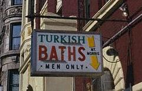
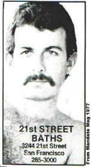
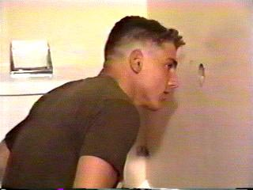
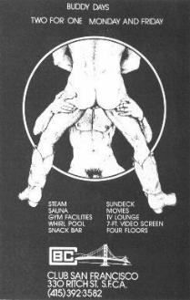
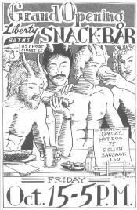
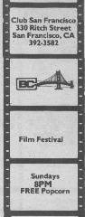
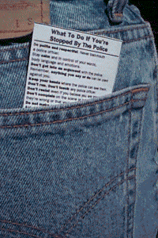

|
Note: Due to the US government's recent censorship mandate -- 18 USC 2257 -- this article has been republished with the brunt of its illustrations excised.
GloryholesBarely two months into 2004, the House Energy and Commerce Committee secured a vote of 49-1, allowing the FCC to increase the maximum fine for "indecency" on television or radio to an astonishing one-half million dollars. This was swift legislation prompted by Janet Jackson's impossibly lame tit gag and Clear Channel's ongoing troubles with radio personality Howard Stern. Fortunately, this court decision fails to impact anyone cruising for three-dimensional adult content found only off the dial, without any complicated infrastructure required to deliver on its promise. Gloryholes are small, fist-sized apertures between bathroom stalls or private video booths at the adult bookstore. Each is raised nearly hip-height from the ground, with a circumference large enough to place a penis through. Doing so allows the individual on the opposite side to perform, ostensibly, some form of sexual activity. Gloryholes can most commonly be located in Tea Rooms, which evolved from the nickname toilet room or the abbreviated (but arguably ghetto) t-room. Tea rooms are public toilet areas where clandestine homosexual activity began gaining massive popularity as early as the eighteenth century. This was at a time when cocksucking was hardly new or novel, and while it was was very much "all the rage," gay people themselves were against the law. Men caught in compromising positions with one another in grope-filled, squirt-heavy sling-based activity were subjected to immediate arrest and summary public humiliation, followed by lengthy jail terms and subsequent execution. Court records as far back as 1860 document cases of men arrested individually and en masse after neighbors, landlords, policemen and janitors innocently peeped through something as simple as a keyhole (or kicked down doors) to ascertain the exact nature of their targets' untoward antics. In an effort to avoid arrest, meeting places were eventually established and spoken of in hushed, lisping tones. Lovingly sketched watercolor maps, charts, and diagrams swished effortlessly from hand to hand across an underground secret society of gay men singular of purpose and committed to cocksucking. The list of meeting places soon grew very large indeed; expanding to include public parks, alleys, dumpsters, YMCA facilities, restrooms, train depots, bus stations, judicial chambers, balconies of silent movie theaters, cheap hotel rooms, nightclubs, abandoned carriages, public libraries, dilapidated farmhouses, hectare-sized fields of gently swaying barley, or sturdy, towering cornstalks where on summer afternoons most anyone of sound mind might conceivably find themselves "lost". These facilities blossomed in the 1950s. Gay bath houses authoritatively dotted the American landscape with such frequency, confidence and availability you'd swear any one of them was a Starbucks. To say that some even had wall-to-wall linoleum would be an understatement. This was the atomic age after all, where the science of sucking dick meant serious business opportunities and serious profit. These were not penny-ante dicklicking warehouses, but proper, three-story hotels often located on coveted real estate in the center of a bustling, downtown metropolis. They would have offered free wireless Internet access had it been available. One of the most important developments in the history of gay bath houses involved gay management and ownership. In 1965, after being so impressed with the endless pic-a-nic basketlike smorgasbord of "amenities" offered in San Francisco, businessman Jack Campbell and two partners opened the Club Bath chain which offered a "a better, cleaner atmosphere" in Cleveland, Ohio. Homosexuals could enjoy television rooms, vending machines, Jacuzzis, shag carpeting and wood paneling -- just like in those banned Calvin Klein advertisements. By 1971 their business included fourteen bathhouses across the United States, offering student discounts and special rates for men who arrived in pairs on Buddy Nights. In 1973, the Club baths had almost 500,000 card-carrying members. There was so much business to go around that "competition" was hardly a problem. Large cities could easily support two or three bathhouses, each of which had hundreds of customers a week renting a locker or a room for the night. In fact, thousands of men chose an evening of "tubs" over going to bars or the corner disco. At that time, 54 percent of gay men had visited the baths more than once in their lives, and 20 percent could described their visits as "somewhat" or "very" frequent. Recruitment advertisements boasted: "If your membership doesn't offer you 1400 rooms, on 64 floors, with 30 steam rooms, 25 saunas, 24 whirlpools, and 8 swimming pools, then you haven't got THE CARD." But these oases of cocksucking camaraderie were subject to vice raid, nice and regular. Not everyone followed the rules, and bath house owners routinely proved themselves prone not only to periodical knobslobbery, but vicious unmitigated backstabbery to boot. Facilities which enjoyed increased profits then had to prevent their venues from becoming too popular. They'd hire bouncers, private guards -- or call the police themselves just to empty the joint and ensure rapid turnover. One account pointed to the fat tips a bath house manager could receive on a single evening, provided a portion of his bonus went toward paying off any cops who "happened" to show up. And the cops? They got free blowjobs, took everyone's money and busted 'em all up anyways. It was an elegantly choreographed Scorsese montage, only with gay dicks instead of casinos. The Hothouse, San Francisco's legendary four-story, ten-thousand-square-foot bath house devoted to forms of sexual expression like bondage, water sports, fisting and "scat," shut down in the wake of mounting concerns over the spread of disease. The city's last bath house, the 21st Street Baths, closed its doors for good in 1987. Ting-a-ling-a-ling. Meanwhile, halfway across town at the tittie bar, straight guys were getting handjobs with no problem. And blowjobs! Not to mention regular sexual encounters and god only knows what else -- from lap dancers, pole vaulters, strippers, would-be strippers, and doe-eyed strippers in training. To the gay bath house crowd, this hardly seemed fair. Whatever happened to the separation of church and state? Those who might ordinarily cry out for stall walls to be torn down now found themselves devising new ways of erecting them, even punching holes through them. Craftily, in one of the earliest documented attempts at cannibalizing or otherwise "taking back" an aspect of their own culture, the gay bath house crowd quietly moved their whole operation straight into the center of the firestorm: the adult bookstore. Buddy booths were invented: closet-sized stalls where a single wall, or glass partition with dual curtains -- or any apparatus blocking access to your neighbor -- separates two booths. A pushbutton on either side first raises, then lowers one's partition. When
two buttons are pressed by adjacent parties, both curtains rise and the two
individuals can access one another. But the times would turn yet again. The straight men (and traditional porn enthusiasts) who didn't particularly care for the gay bath constituent invading their personal beat-off space took drastic measures to reclaim what they believed was the only correct stance on closeted, semi-sanctioned cocksucking in public. A line of adult magazines, videos and DVDs blatantly titled GLORYHOLE puts a twentieth-century, decidedly heterosexual spin on the stall-to-stall craze sweeping the nation. It's "not just for fags anymore," proclaims competing press kits. In the content, women and young girls -- not just bearish men in wigs -- are seen getting down on their hands and knees in bathroom stalls, buddy booths, or subway station toilets. Each female affords quality customer care to any erection rapping soundly at her chamber door. At times these partitions are evenly equipped with multiple gloryholes: as the young ladies service three or four gentlemen callers at once, they begin to resemble old fashioned telephone operators at a busy pegboard switching terminal. Furthering exacerbating both controversy and visual incongruency, all the cocks presented in the GLORYHOLE series are enormous African-American cocks. Increasingly, more important than knowing where to find gloryholes is knowing how to avoid holes gathering nothing but trouble. The secret handpainted treasure maps passed down from one ruffled fop to another have given way to advanced Internet-based bulletin boarding technology and instant messaging, upon which seasoned world travelers dispense procedural advice, personalized anecdotal evidence, and dire warnings to be heeded by anyone in a position to listen and learn: DeAnza
Community College, Steven's Creek Blvd., Cupertino, CA: "Cruisy
toilet next to football stadium bleachers. The campus police appear to
be watching traffic going in and out on occasion." Macy's Union Square, San Francisco, CA: "Security comes in and out several times a day and hangs out where you can't see them. I've witnessed this several times, and have also seen a couple people busted." The Vault, Provincetown, MA: "This place sucks! You might as well be in some straight bar. There is no action at all and it’s way too bright." Blue Hills Reservation, MA: "I was here recently and was stopped by an undercover "police officer” who fondled himself only to get me to touch him back. After he threatened to arrest me, he said we could work out a deal if I paid him $300. I was panic stricken and we then drove in my car to a nearby ATM and I gave him $100 to get my license back. I drove him back to the woods and left. I wonder if it was a scam." Cinema Blue Theatre, Alabama: "There was a police bust here today. Five undercover cops paid and came in at different times. Some lurked outside looking at magazines. After watching some guys jacking awhile, they flashed on the lights, the cops outside ran in and took about seven people away, after making a disgusting public lecture to everyone in theater. Be careful and never pull your dick out unless you’re alone with someone in an empty theater." Silverwater Road, Sydney Australia: "It’s a great spot.
Watch out for the cops. They used to only drive through the car park, but now
are actually checking the toilets." Warehouse Spa For Men, Hamilton, Ontario: "I was there on a Saturday night and only three other guys were there, all over fifty and over three hundred pounds. I've been here about seven times, and always ended up going home to jack off." Victoria Station, Manchester: "I was having the best fuck of my life here. As soon as we finished, a policeman come in. If he had been any earlier he would have caught me bent over the urinal getting fucked stupid." Not every gloryhole station is lucky enough to boast a buddy booth. Many facilities tolerate two or more individuals sharing a designated space discreetly, but doing so requires either party to broadcast clear indicators such as the common invitational protocol many cocksuckers refer to as eye contact. As you enter the facility, maintain a direct and steady gaze for more than a few seconds with your intended partner. If he returns the stare, go into the booth and leave the door unlocked. If he is also interested, he will open your door shortly thereafter. If he is not interested, he will likely break any glance in your direction the moment your eyes meet his. The bathroom stall is the only major anonymous sex stop on or near interstate highways, and the protocol is even simpler. Enter the stall at the farthest end of the bathroom. Close the door, pull your pants down and wait. When someone enters the stall next to you, move and tap your foot in such a way that your neighbor can see and hear. Toilet cruisers frequent isolated bathrooms far from the public view, and often listen for squeaky doors. There are, undoubtedly, FAQs. "What if I'm at a truck stop restroom in southern Wyoming," writes one anonymous user, "and some ignorant homophobe grabs my cock, bends it in half, pounds a huge nail through it and takes off? I'd be stuck in the middle of nowhere! How in the world would I extricate myself from such a predicament? And how might I delicately explain such a farcical Three's Company episode to say, my prudish wife and three yappy teenage sons outside in the minivan? They've been patiently waiting for me to emerge from the restroom so we can continue our vacation. I'm posting this msg from my cel phone. nobodys enterd the bathr0m yet so i'm ok but if some1 cud plz respnd i hurt bad k thx." Blood Simple and Passion of the Christ references aside, the overwhelming consensus is that you could simply drill another gloryhole through the stall partition, one large enough to slip your free hand through. From there, with the precision of a master surgeon, you could remove the offending nail inch by inch from your cock as quickly as time permitted. Sanitary tissue, hand towels, and cowboy hat-shaped toilet seat covers are excellent impromptu bandages which do indeed stem the flow of blood -- but scatterbrained paranoias like these are largely the stuff of urban legend, fueled by superstitious fears: marauding vice cops equipped with miniature, penis-sized handcuffs suitable for clamping around surprised erections are (in most states) the legacy of a bygone era. In any event, gloryhole enthusiasts are always encouraged to stay alert for unexpected hazards. Second only to the itchy red welts caused by sexually transmitted diseases or the night tremors and facial wasting prompted by AIDS-related symptoms, the largest obstacles to wrangle during acts of free range cocksucking are the standards of decency in your community. The American Civil Liberties Union has engineered a wallet-sized pop-up book applicable to all citizens of the United States. This handy guide is suitable for carriage in your wallet, back pocket or glove compartment. It describes in step-by-step detail how any one of us should respond when we're stopped by police, or when we encounter law enforcement officials intent upon investigating our potential involvement with nearby criminal activity. It also details our rights, our legal obligations, things we can do, things we absolutely must not do, and it talks about police procedures like pocket patting and search warrants, which we don't necessarily have to subject ourselves to. Click here to view a copy of this document in another big huge window. Keep in mind, this document was engineered prior to the Patriot Act. The Lambda Legal Defense and Education Fund is a branch of Lambda Legal, a nationwide organization committed to achieving nothing less than the full recognition of civil rights for lesbians, gay men, bisexuals, the transgendered, and people with HIV/AIDS. "Please do not confuse Lambda with NAMBLA," they're quick to prompt. "They're completely different." Lambda also represents the unsung heroes of the night: those lurking in the pumpkin patch, crouching behind freshly clipped elderberry bushes -- even those with outmoded beige trench coats buckled at the knees sitting patiently in the shadows of a handicapped stall waiting for the inevitable multicolored, multicultural cock to poke itself through the suspiciously cushioned and well-maintained aperture. While full-blown cock addiction is neither a word nor phrase meant for bandying about lightly -- those lurking, whether they know it or not, seek nothing less than equal status to those among us who are fully blown on a regular basis. Some have gone so far as to declare these mysterious midnight smokers and pokers nothing short of magically delicious. Toward that end, the social architects at Lambda Legal have authored yet another fold 'em up, spread 'em out pop-up book suitable for toting about town in a purse or on your person. IF YOU CRUISE IN PARKS, BATHROOMS OR OTHER SPACES OPEN TO PUBLIC VIEW, shrieks the tasteful Helvetica twelve point on page one, BE AWARE OF YOUR SURROUNDINGS AND KNOW YOUR RIGHTS. It's called the Little Black Book, drafted specifically for cocksuckers and cockseekers alike. Click here for a free copy -- and don't call it a parody. The dick you lick belongs to someone else, but the ass you save might be your own. |
 Some
booths require both buttons to be pressed at the same time. These booths were
designed to allow people to see, but not necessarily touch their neighbor.
Some facilities have modified their booths so that only a small porthole opens
up. This allows two people to see and feel each other while adhering
to the age-old principle of good fences making for good neighbors. A couples'
booth is not unlike the TARDIS, an inner sanctum appearing much larger on
the inside than on the out. Often a wooden sauna bench takes the place of a
single swivel stool or compact folding chair, and such booths are suitable for
double dates.
Some
booths require both buttons to be pressed at the same time. These booths were
designed to allow people to see, but not necessarily touch their neighbor.
Some facilities have modified their booths so that only a small porthole opens
up. This allows two people to see and feel each other while adhering
to the age-old principle of good fences making for good neighbors. A couples'
booth is not unlike the TARDIS, an inner sanctum appearing much larger on
the inside than on the out. Often a wooden sauna bench takes the place of a
single swivel stool or compact folding chair, and such booths are suitable for
double dates.{kind=link}
{kind=link}